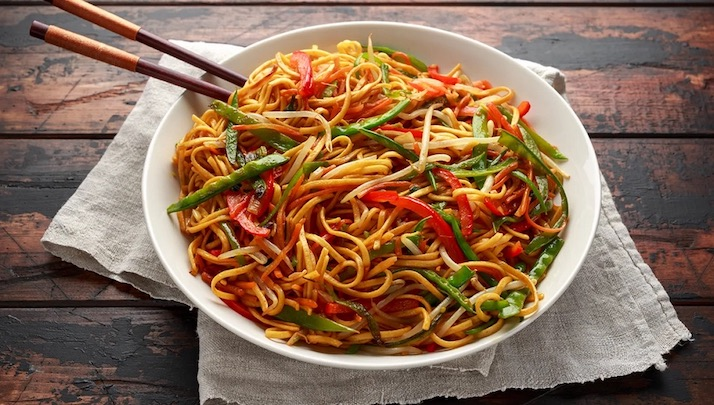

Chow Mein

Description
Cook this authentic Chinese chow mein noodle stir-fry in less than ten minutes, adding any crisp seasonal vegetables you fancy.
Steps
Ingredients
- 150g/5oz medium egg noodles
- dash toasted sesame oil
- 300g/11oz skinless chicken breast fillets, sliced into strips
- 2 tbsp light soy sauce
- 1 tsp five-spice powder
- 1 tsp chilli sauce (optional)
- 1 tbsp cornflour
- 1 tbsp groundnut oil
- 1 red pepper, seeds removed and thinly sliced
- 150g/5oz bean sprouts
- 1 spring onion, sliced lengthways
- freshly ground black pepper
Method
- Cook the noodles in a pan of boiling water for 2–3 minutes, until al dente, or according to packet instructions. Drain, then rinse under cold running water and drain again. Drizzle with a dash of sesame oil and toss through to prevent the noodles from sticking to each other.
- Put the chicken strips in a bowl and season with a dash of light soy sauce, the five-spice powder and chilli sauce, if using. Mix well, then lightly dust the chicken strips with the cornflour.
- Heat a wok until smoking and add the groundnut oil, then add the chicken and stir fry for 3–4 minutes, or until the chicken is golden-brown and cooked through.
- Add the red pepper and stir fry for 1 minute, then add the bean sprouts and spring onion and stir fry for 30 seconds. Stir in the cooked noodles and season with the soy sauce, a dash of sesame oil and freshly ground black pepper.
- Pile the noodles onto a serving plate and serve immediately.